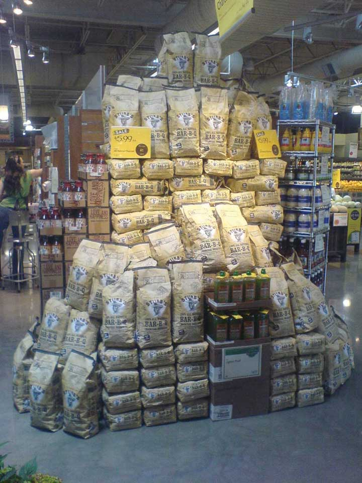

Once a firm has established its pricing objectives and analyzed the factors that affect how it should price a product, the company must determine the pricing strategy (or strategies) that will help it achieve those objectives. As we have indicated, firms use different pricing strategies for their offerings. And oftentimes, the strategy depends on the stage of life cycle the offerings are in currently. Products may be in different stages of their life cycle in various international markets. Next, we’ll examine three strategies businesses often consider when a product is first introduced and then look at several different pricing approaches that companies utilize during the product life cycle.
Think of products that have been introduced in the last decade and how products were priced when they first entered the market. Remember when the iPhone was first introduced, its price was almost $700. Since then, the price has dropped considerably even for new models. The same is true for DVD players, LCD televisions, digital cameras, and many high-tech products. As mentioned in Chapter 7 "Developing and Managing Offerings", a skimming price strategyA strategy whereby a company sets a high initial price for a product. The idea is to target buyers who are willing to pay a high price (top of the market) and buy products early. is when a company sets a high initial price for a product. The idea is to go after consumers who are willing to pay a high price (top of the market) and buy products early. This way, a company recoups its investment in the product faster.
The easy way to remember a skimming approach is to think of the turkey gravy at Thanksgiving. When the gravy is chilled, the fat rises to the top and is often “skimmed” off before serving. Price skimming is a pricing approach designed to skim that top part of the gravy, or the top of the market. Over time, the price of the product goes down as competitors enter the market and more consumers are willing to purchase the offering.
In contrast to a skimming approach, a penetration pricing strategyA strategy in which an organization offers a low initial price on a product so that it captures as much market share as possible. is one in which a low initial price is set. Often, many competitive products are already in the market. The goal is to get as much of the market as possible to try the product. Penetration pricing is used on many new food products, health and beauty supplies, and paper products sold in grocery stores and mass merchandise stores such as Walmart, Target, and Kmart.
Another approach companies use when they introduce a new product is everyday low pricesThe practice of charging a low initial price for an offering and maintaining that price throughout the offering’s product life cycle.. That is, the price initially set is the price the seller expects to charge throughout the product’s life cycle. Companies like Walmart and Lowe’s use everyday low pricing. Lowe’s emphasizes their everyday low pricing strategy with the letters in their name plus the letter “t” (Lowest).
Companies can choose many ways to set their prices. We’ll examine some common methods you often see. Many stores use cost-plus pricingA pricing strategy where a certain amount of profit is added to the total cost of a product in order to determine its price., in which they take the cost of the product and then add a profit to determine a price. Cost-plus pricing is very common. The strategy helps ensure that a company’s products’ costs are covered and the firm earns a certain amount of profit. When companies add a markupA certain amount of money added to the cost of a product to set the final price., or an amount added to the cost of a product, they are using a form of cost-plus pricing. When products go on sale, companies mark down the prices, but they usually still make a profit. Potential markdownsThe amount (in dollars or percent) taken off the price. or price reductions should be considered when deciding on a starting price.
Many pricing approaches have a psychological appeal. Odd-even pricingA strategy in which a company prices products a few cents below the next dollar amount or a few dollars (for high-cost products such as automobiles) below the next hundred- or thousand-dollar value. occurs when a company prices a product a few cents or a few dollars below the next dollar amount. For example, instead of being priced $10.00, a product will be priced at $9.99. Likewise, a $20,000 automobile might be priced at $19,998, although the product will cost more once taxes and other fees are added. See Figure 15.4 for an example of odd-even pricing.
Figure 15.4
The charcoal shown in the photo is priced at $5.99 a bag, which is an example of odd-even pricing, or pricing a product slightly below the next dollar amount.
Source: Photo courtesy of Stubb’s Legendary Kitchen.
Prestige pricingThe practice of pricing a product higher to signal that it is of high quality. occurs when a higher price is utilized to give an offering a high-quality image. Some stores have a quality image, and people perceive that perhaps the products from those stores are of higher quality. Many times, two different stores carry the same product, but one store prices it higher because of the store’s perceived higher image. Neckties are often priced using a strategy known as price liningPricing a group of similar products (e.g., neckties) at a few different price levels (e.g., $25, $50, and $75)., or price levels. In other words, there may be only a few price levels ($25, $50, and $75) for the ties, but a large assortment of them at each level. Movies and music often use price lining. You may see a lot of movies and CDs for $15.99, $9.99, and perhaps $4.99, but you won’t see a lot of different price levels.
Remember when you were in elementary school and many students bought teachers little gifts before the holidays or on the last day of school. Typically, parents set an amount such as $5 or $10 for a teacher’s gift. Knowing that people have certain maximum levels that they are willing to pay for gifts, some companies use demand backward pricingPricing a product based on what customers are willing to pay for it and then creating the offering based on that price.. They start with the price demanded by consumers (what they want to pay) and create offerings at that price. If you shop before the holidays, you might see a table of different products being sold for $5 (mugs, picture frames, ornaments) and another table of products being sold for $10 (mugs with chocolate, decorative trays, and so forth). Similarly, people have certain prices they are willing to pay for wedding gifts—say, $25, $50, $75, or $100—so stores set up displays of gifts sold at these different price levels. IKEA also sets a price for a product—which is what the company believes consumers want to pay for it—and then, working backward from the price, designs the product.
Leader pricingA strategy of offering low prices on one or more items as “lead” items in advertisements to attract customers. involves pricing one or more items low to get people into a store. The products with low prices are often on the front page of store ads and “lead” the promotion. For example, prior to Thanksgiving, grocery stores advertise turkeys and cranberry sauce at very low prices. The goal is to get shoppers to buy many more items in addition to the low-priced items. Leader or low prices are legal; however, as you learned earlier, loss leadersProducts priced below cost; this is illegal in some states., or items priced below cost in an effort to get people into stores, are illegal in many states.
Sealed bid pricingThe process of offering to buy or sell products at prices designated in sealed bids. is the process of offering to buy or sell products at prices designated in sealed bids. Companies must submit their bids by a certain time. The bids are later reviewed all at once, and the most desirable one is chosen. Sealed bids can occur on either the supplier or the buyer side. Via sealed bids, oil companies bid on tracts of land for potential drilling purposes, and the highest bidder is awarded the right to drill on the land. Similarly, consumers sometimes bid on lots to build houses. The highest bidder gets the lot. On the supplier side, contractors often bid on different jobs and the lowest bidder is awarded the job. The government often makes purchases based on sealed bids. Projects funded by stimulus money were awarded based on sealed bids.
Bids are also being used online. Online auctionBidding and negotiating prices online with buyers and sellers on sites such as eBay.com until an acceptable price is agreed upon. sites such as eBay give customers the chance to bid and negotiate prices with sellers until an acceptable price is agreed upon. When a buyer lists what he or she wants to buy, sellers may submit bids. This process is known as a forward auctionThe process that occurs when a buyer lists what he or she wants to buy and sellers may submit bids.. If the buyer not only lists what he or she wants to buy but also states how much he or she is willing to pay, a reverse auctionWhen the buyer lists what he or she wants to buy and also states how much he or she is willing to pay. The reverse auction is finished when at least one firm is willing to accept the buyer’s price. occurs. The reverse auction is finished when at least one firm is willing to accept the buyer’s price.
Going-rate pricingPricing whereby purchasers pay the same price for a product regardless of where they buy it or from whom. occurs when buyers pay the same price regardless of where they buy the product or from whom. Going-rate pricing is often used on commodity products such as wheat, gold, or silver. People perceive the individual products in markets such as these to be largely the same. Consequently, there’s a “going” price for the product that all sellers receive.
Price bundlingA strategy of selling different products or services together, typically at a lower price than if each product or service is sold separately. occurs when different offerings are sold together at a price that’s typically lower than the total price a customer would pay by buying each offering separately. Combo meals and value meals sold at restaurants are an example. Companies such as McDonald’s have promoted value meals for a long time in many different markets. See the following video clips for promotions of value meals in the United States, Greece, and Japan. Other products such as shampoo and conditioner are sometimes bundled together. Automobile companies bundle product options. For example, power locks and windows are often sold together, regardless of whether customers want only one or the other. The idea behind bundling is to increase an organization’s revenues.
McDonald’s Introduced Value Meals in 1985
http://www.youtube.com/v/VoP0tAvHcGYLook at the cost and the amount of food in the original value meal.
McDonald’s in Japan
http://www.youtube.com/v/11quU3nqkVEMcDonald’s is popular around the world.
Captive pricingA strategy firms use to price products when they know customers must buy specific replacement parts, such as razor blades, because there are no alternatives. is a strategy firms use when consumers must buy a given product because they are at a certain event or location or they need a particular product because no substitutes will work. Concessions at a sporting event or a movie provide examples of how captive pricing is used. Maybe you didn’t pay much to attend the game, but the snacks and drinks were extremely expensive. Similarly, if you buy a razor and must purchase specific razor blades for it, you have experienced captive pricing. The blades are often more expensive than the razor because customers do not have the option of choosing blades from another manufacturer.
Pricing products consumers use together (such as blades and razors) with different profit margins is also part of product mix pricingDeciding how to price a firm’s products and services that go together, such as power options (locks, windows) on a car.. Recall from Chapter 6 "Creating Offerings" that a product mix includes all the products a company offers. If you want to buy an automobile, the base price might seem reasonable, but the options such as floor mats might earn the seller a much higher profit margin. While consumers can buy floor mats at stores like Walmart for $30, many people pay almost $200 to get the floor mats that go with the car from the dealer.
Most students and young people have cell phones. Are you aware of how many minutes you spend talking or texting and what it costs if you go over the limits of your phone plan? Maybe not if your plan involves two-part pricing. Two-part pricingA pricing strategy in which providers have two different charges for a product, such as the base monthly rate for cell phone coverage and additional charges for extra minutes or texting. means there are two different charges customers pay. In the case of a cell phone, a customer might pay a charge for one service such as a thousand minutes, and then pay a separate charge for each minute over one thousand. Get out your cell phone and look at how many minutes you have used. Many people are shocked at how many minutes they have used or the number of messages they have sent in the last month.
Have you ever seen an ad for a special item only to find out it is much more expensive than what you recalled seeing in the ad? A company might advertise a price such as $25*, but when you read the fine print, the price is really five payments of $25 for a total cost of $125. Payment pricingA pricing strategy in which customers are allowed to break down product payments into smaller amounts they pay incrementally., or allowing customers to pay for products in installments, is a strategy that helps customers break up their payments into smaller amounts, which can make them more inclined to buy higher-priced products.
Promotional pricingA short-term tactic to get people to purchase a product or more of it. is a short-term tactic designed to get people into a store or to purchase more of a product. Examples of promotional pricing include back-to-school sales, rebates, extended warranties, and going-out-of-business sales. Rebates are a great strategy for companies because consumers think they’re getting a great deal. But as you learned in Chapter 12 "Public Relations, Social Media, and Sponsorships", many consumers forget to request the rebate. Extended warranties have become popular for all types of products, including automobiles, appliances, electronics, and even athletic shoes. If you buy a vacuum for $35, and it has a one-year warranty from the manufacturer, does it really make sense to spend an additional $15 to get another year’s warranty? However, when it comes to automobiles, repairs can be expensive, so an extended warranty often pays for itself following one repair. Buyers must look at the costs and benefits and determine if the extended warranty provides value.
We discussed price discriminationThe process of charging different customers different prices for the same product and quantities of it purchased., or charging different customers different prices for the same product, earlier in the chapter. In some situations, price discrimination is legal. As we explained, you have probably noticed that certain customer groups (students, children, and senior citizens, for example) are sometimes offered discounts at restaurants and events. However, the discounts must be offered to all senior citizens or all children within a certain age range, not just a few. Price discrimination is used to get more people to use a product or service. Similarly, a company might lower its prices in order to get more customers to buy an offering when business is slow. Matinees are often cheaper than movies at night; bowling might be less expensive during nonleague times, and so forth.
Organizations must also decide what their policies are when it comes to making price adjustmentsA change to the listed price of a product., or changing the listed prices of their products. Some common price adjustments include quantity discountsDiscounts buyers get for making large purchases., which involves giving customers discounts for larger purchases. Discounts for paying cash for large purchases and seasonal discounts to get rid of inventory and holiday items are other examples of price adjustments.
A company’s price adjustment policies also need to outline the firm’s shipping charges. Many online merchants offer free shipping on certain products, orders over a certain amount, or purchases made in a given time frame. FOB (free on board) origin and FOB delivered are two common pricing adjustments businesses use to show when the title to a product changes along with who pays the shipping charges. FOB (free on board) originA pricing arrangement that designates that a product’s title changes at its origin (the place it’s purchased), and the buyer pays the shipping charges. means the title changes at the origin—that is, when the product is purchased—and the buyer pays the shipping charges. FOB (free on board) destinationA pricing arrangement that designates that a product’s title changes at its destination (the place to which it’s transported), and the seller pays the shipping charges. means the title changes at the destination—that is, after the product is transported—and the seller pays the shipping charges.
Uniform-delivered pricingA pricing strategy in which buyers pays the same shipping charges regardless of their locations., also called postage-stamp pricing, means buyers pay the same shipping charges regardless of where they are located. If you mail a letter across town, the postage is the same as when you mail a letter to a different state.
Recall that we discussed trade allowancesDiscounts an organization gives its channel partners for performing different functions. in Chapter 12 "Public Relations, Social Media, and Sponsorships". For example, a manufacturer might give a retail store an advertising allowance to advertise the manufacturer’s products in local newspapers. Similarly, a manufacturer might offer a store a discount to restock the manufacturer’s products on store shelves rather than having its own representatives restock the items.
Reciprocal agreementsAgreements whereby merchants agree to promote one another’s offerings to customers. are agreements in which merchants agree to promote each other to customers. Customers who patronize a particular retailer might get a discount card to use at a certain restaurant, and customers who go to a restaurant might get a discount card to use at a specific retailer. For example, when customers make a purchase at Diesel, Inc., they get a discount coupon good to use at a certain resort. When customers are at the resort, they get a discount coupon to use at Diesel. Old Navy and Great Clips implemented similar reciprocal agreements.
Figure 15.6
When customers made a purchase at the clothing chain Diesel, they were given a bounce back card to be used during certain dates as shown in this photo. The bounce back card gets customers back in the store for additional purchases.
Source: Photo courtesy of Diesel, Inc.
A promotion that’s popular during weak economic times is called a bounce back. A bounce backA discount card or coupon purchasers can use on their next shopping visits during set dates. is a promotion in which a seller gives customers discount cards or coupons (see Figure 15.6) after purchasing. Consumers can then use the cards and coupons on their next shopping visits. The idea is to get the customers to return to the store or online outlets later and purchase additional items. Some stores set minimum amounts that consumers have to spend to use the bounce back card.
Both external and internal factors affect pricing decisions. Companies use many different pricing strategies and price adjustments. However, the price must generate enough revenues to cover costs in order for the product to be profitable. Cost-plus pricing, odd-even pricing, prestige pricing, price bundling, sealed bid pricing, going-rate pricing, and captive pricing are just a few of the strategies used. Organizations must also decide what their policies are when it comes to making price adjustments, or changing the listed prices of their products. Some companies use price adjustments as a short-term tactic to increase sales.